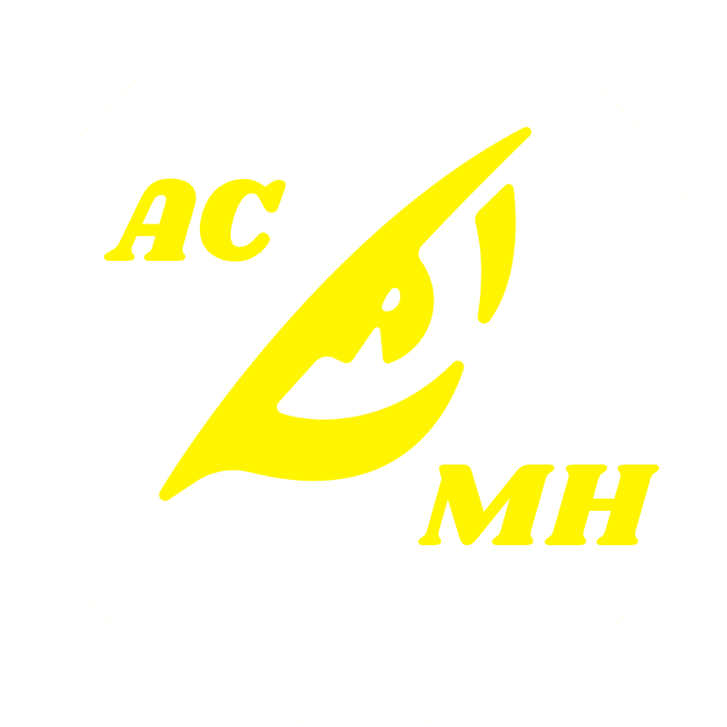

ATHLETIC CLUB DE MAGNY-LES-HAMEAUX
Il n'y a pas de secret dans la réussite
DERNIÈRE ACTUALITÉ

CALENDRIER
CHAQUE MATCH ÉCRIT UNE PAGE.
LES PROCHAINES RENCONTRES ET LES RENDEZ-VOUS DU CLUB SERONT AFFICHÉS ICI.
ANCIENNES ACTUALITÉS
RIEN NE S'OUBLIE.
RETROUVEZ ICI LES ACTUALITÉS, LES ANNONCES ET LES MOMENTS MARQUANTS DE L'HISTOIRE DE L'ACMH.
EFFECTIFS
L'AVENIR SE CONSTRUIT ENSEMBLE.
LES EFFECTIFS ET LES INFORMATIONS SUR LES ÉQUIPES SERONT PUBLIÉS ICI.
CHRONOLOGIE
Premier logo - 26/11/2026
DE LA PREMIÈRE IDÉE AUX GRANDES AMBITIONS : RETROUVEZ LES ÉTAPES IMPORTANTES DE LA CONSTRUCTION DE L'ACMH.
FAQ
QUI SOMMES-NOUS ?
Nous sommes un groupe d'amis passionnés de football. Nous nous sommes donnés en défi de créer le 3e grand club des Yvelines, dans notre ville, Magny-les-Hameaux.
POURQUOI NOIR ET JAUNE ?
Ces couleurs viennent du blason du club comme vous
pouvez le voir ici.

La partie jaune et noire avec les aiglettes vient
de l'armoirie du premier seigneur de Magny-les-Hameaux.
Nous avons alors décidé de reprendre ces couleurs pour
faire une sorte de "conquête" en tant que seigneurs.
Cependant, vu que le noir sur jaune était déjà pris
par le Borussia Dortmund, nous avons inversé ces couleurs.
POURQUOI ATHLETIC CLUB DE MAGNY-LES-HAMEAUX ?
On a choisi ce nom car le "Magny Football Club" étant déjà pris, il a fallu trouver un autre nom. Pour cela on s'est inspiré du Milan AC ou encore de l'Atlético de Madrid, deux clubs qu'on respecte par-dessus tout, pour se nommer Athletic Club de Magny-les-Hameaux.
UN PROJET SUR COMBIEN DE TEMPS, QUELS OBJECTIFS ?
Tout d'abord il faut savoir que vous n'êtes pas prêts de voir le club jouer son premier match car nous n'avons pour le moment pas fait de démarche administrative pour la création de l'ACMH. Cependant nous nous sommes donné pour défi d'être pensionnaires de National 2 vers 2040. Un grand défi car nous ne connaissons pas la division dans laquelle nous allons débuter. Nous aimerions débuter au plus tôt, si possible dans quatre ans.
DES IDÉES D'INVESTISSEMENTS FUTURS ?
Oui. Nous aimerions avoir notre propre stade pour notre arrivée en division Nationale. Ce stade serait au plus près de Magny-les-Hameaux. Il sera évident qu'il sera pensé pour l'écologie ainsi que pour la protection de l'écosystème des environs. Aucune démarche lancée pour le moment pour le stade.
AU NIVEAU DES EFFECTIFS, QUELLE POLITIQUE DE RECRUTEMENT OU DE LICENCIEMENT SERA APPLIQUÉE ?
Nous aimerions nous livrer à une politique de recrutement tournée vers les Magnycois, surtout les jeunes. Cependant nous voulons avoir des effectifs à un niveau très élevé pour pouvoir être le plus compétitifs possible et atteindre nos objectifs. Au niveau des recrutements on sera ouvert à toutes arrivées.